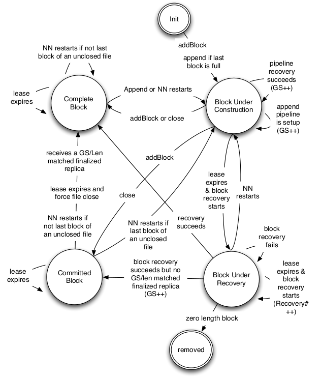
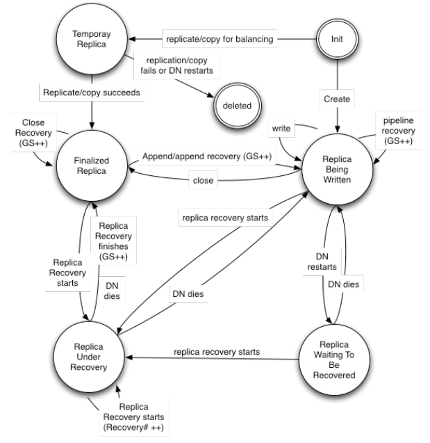
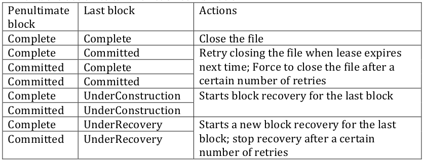

Hadoop
TroubleShooting
by xiaofei
HDFS块信息存储

术语
Block
位于NameNode上的Block描述信息
Replica
位于DataNode上的副本信息
Block状态
- UnderConstruction
- UnderRecovery
- Committed
- Complete
被create或append的块,block length 和GS未达到最终值
文件lease到期，由状态UnderConstruction转换到此状态
block的length和GS到达了最终状态.一个未关闭的文件块当NN被新请求一个块时，上一个块由UnderConstruction切换到Committed
complete的block的length和GS是与各个replica的length和GS是完全匹配的。complete只保留finalized replica的位置
Block状态
Replica状态
- Finalized
- Rbw (Replica Being Written to)
- Rwr (Replica Waiting to be Recovered)
finalized replica的字节已经到达最终状态。新的字节只会在做append操作时才再次写入。但finalized replace的GS不会一陈不变，可能会在做recovery后有变化.
replica create或append后，其位于rbw状态。未关闭文件的最后一个块的状态始终是这个。length和GS未达到最终状态
当DataNode死掉或重启时，状态为rbw的replica改为rwr。rwr状态的replica不会出现在pipeline中，也不会接收任何其它数据.
Replica状态
- rur (Replica Under Recovery)
- Temporary
当lease过期replica将会将状态改为rur
temporary状态的replica与replica under construction，但只是由当集群做balance时创建的.它与rwb状态的replica共享很多属性，但数据对用户不可见。在DataNode重启时，位于temporary状态的replica将被删除.
Replica状态
错误处理
- Lease Recovery
Lease Recovery
- 并发控制
- 一致性保障
并发控制
NN调用 renewLease(由DFSClient 调用rpc触发)改变文件的leaseholder，同时将每次变更持久化到editlog中。如果client的状态是活动状态的，他的所有与写相关的请求都会请求新的generation stamp。如果没有lease holder像new block,close file操作将被拒绝。这可以防止从client端并发的修改未关闭的文件。
一致性保障
NN会检查文件最后两个block的状态.其它block必须是complete状态。
Hadoop,HBase错误处理
DFSClient 持续报 Could not complete file .... retrying...
java.io.IOException: Bad response ERROR for block BP-178649112-10.35.66.11-1353498632460:blk_-2898024740730493978_16729245 from datanode 10.35.66.21:50010
at org.apache.hadoop.hdfs.DFSOutputStream$DataStreamer$ResponseProcessor.run(DFSOutputStream.java:681)
2013-11-18 01:15:44,807 WARN org.apache.hadoop.hdfs.DFSClient: Error Recovery for block BP-178649112-10.35.66.11-1353498632460:blk_-2898024740730493978_1
6729245 in pipeline 10.35.66.54:50010, 10.35.66.17:50010, 10.35.66.21:50010: bad datanode 10.35.66.21:50010
2013-11-18 01:15:50,129 INFO org.apache.hadoop.hdfs.DFSClient: Could not complete file /mapred/system/job_201311171227_0102/job-info retrying...
2013-11-18 01:15:50,531 INFO org.apache.hadoop.hdfs.DFSClient: Could not complete file /mapred/system/job_201311171227_0102/job-info retrying...
DFSClient 持续报 Could not complete file .... retrying...
//DFSOutputStream
private void completeFile(ExtendedBlock last) throws IOException {
long localstart = Time.now();
boolean fileComplete = false;
while (!fileComplete) {
fileComplete = dfsClient.namenode.complete(src, dfsClient.clientName, last);
if (!fileComplete) {
if (!dfsClient.clientRunning ||
(dfsClient.hdfsTimeout > 0 &&
localstart + dfsClient.hdfsTimeout < Time.now())) {
String msg = "Unable to close file because dfsclient " +
" was unable to contact the HDFS servers." +
" clientRunning " + dfsClient.clientRunning +
" hdfsTimeout " + dfsClient.hdfsTimeout;
DFSClient.LOG.info(msg);
throw new IOException(msg);
}
try {
Thread.sleep(400);
if (Time.now() - localstart > 5000) {
DFSClient.LOG.info("Could not complete file " + src + " retrying...");
}
} catch (InterruptedException ie) {
}
}
}
}
DFSClient 持续报 Could not complete file .... retrying...
- 严重程度:
- 原因:
- 解决办法:
低
大批量客户端通过DFSClient调用NameNode中的complete完成块的传输调用rpc超过5秒
<property>
<name>dfs.namenode.handler.count</name>
<value>512</value>
<final>true</final>
</property>
NameNode持续报block recover直至NN无响应
2013-11-21 18:25:07,534 INFO org.apache.hadoop.hdfs.server.namenode.LeaseManager: Started block recovery for file /data/input/applog/20131119/BAA-OWINMSMQ1_2013111920.log.1384870964955 lease [Lease. Holder: DFSClient_NONMAPREDUCE_766031715_42, pendingcreates: 1]
2013-11-21 18:25:07,534 INFO org.apache.hadoop.hdfs.server.namenode.LeaseManager: Lease [Lease. Holder: DFSClient_NONMAPREDUCE_766031715_42, pendingcreates: 1] has expired hard limit
2013-11-21 18:25:07,534 INFO org.apache.hadoop.hdfs.server.namenode.FSNamesystem: Recovering lease=[Lease. Holder: DFSClient_NONMAPREDUCE_766031715_42, pendingcreates: 1], src=/data/input/applog/20131119/BAA-OWINMSMQ1_2013111920.log.1384870964955
NameNode持续报block recover直至NN无响应

NameNode持续报block recover直至NN无响应

NameNode持续报block recover直至NN无响应
//LeaseManager Monitor
class Monitor implements Runnable {
final String name = getClass().getSimpleName();
/** Check leases periodically. */
@Override
public void run() {
for(; shouldRunMonitor && fsnamesystem.isRunning(); ) {
try {
fsnamesystem.writeLockInterruptibly();
try {
if (!fsnamesystem.isInSafeMode()) {
checkLeases();
}
} finally {
fsnamesystem.writeUnlock();
}
Thread.sleep(HdfsServerConstants.NAMENODE_LEASE_RECHECK_INTERVAL);
} catch(InterruptedException ie) {
if (LOG.isDebugEnabled()) {
LOG.debug(name + " is interrupted", ie);
}
}
}
}
}
NameNode持续报block recover直至NN无响应
//LeaseManager
private synchronized void checkLeases() {
assert fsnamesystem.hasWriteLock();
for(; sortedLeases.size() > 0; ) {
final Lease oldest = sortedLeases.first();
if (!oldest.expiredHardLimit()) {
return;
}
LOG.info("Lease " + oldest + " has expired hard limit");
final List removing = new ArrayList();
// need to create a copy of the oldest lease paths, becuase
// internalReleaseLease() removes paths corresponding to empty files,
// i.e. it needs to modify the collection being iterated over
// causing ConcurrentModificationException
String[] leasePaths = new String[oldest.getPaths().size()];
oldest.getPaths().toArray(leasePaths);
for(String p : leasePaths) {
try {
if(fsnamesystem.internalReleaseLease(oldest, p, HdfsServerConstants.NAMENODE_LEASE_HOLDER)) {
LOG.info("Lease recovery for file " + p +
" is complete. File closed.");
removing.add(p);
} else {
LOG.info("Started block recovery for file " + p +
" lease " + oldest);
}
} catch (IOException e) {
LOG.error("Cannot release the path "+p+" in the lease "+oldest, e);
removing.add(p);
}
}
for(String p : removing) {
removeLease(oldest, p);
}
}
} NameNode持续报block recover直至NN无响应
//FSNameSystem
private void logReassignLease(String leaseHolder, String src,
String newHolder) {
writeLock();
try {
getEditLog().logReassignLease(leaseHolder, src, newHolder);
} finally {
writeUnlock();
}
getEditLog().logSync();
}
NameNode持续报block recover直至NN无响应
- 严重程度:
- 原因:
高
NN中LeaseManager的Monitor定时检查文件是否硬过期（同时加写锁），如果发现某文件过期则调用FSNameSystem.internalReleaseLease()方法关闭文件，但调用该方法中会触发FSNameSystem.logReassignLease(),同时此方法中也有写锁，造成editlog中的状态不同同步。而interalReleaseLease方法始终返回false,最终功造成死循环。Fix方式见HDFS 4186。
NameNode持续报block recover直至NN无响应
- 暂时的避免方案是建议在使用DFSClient时及时关闭操作的文件，不要长时间打开着文件，但不写入任何信息，最终造成NameNode Lease硬过期。
- 长期来看的话需要将当前版本升级到CDH4 4.2.1之后的版本。
HDFS 4186
//LeaseManager
class Monitor implements Runnable {
final String name = getClass().getSimpleName();
/** Check leases periodically. */
@Override
public void run() {
for(; shouldRunMonitor && fsnamesystem.isRunning(); ) {
boolean needSync = false;
try {
fsnamesystem.writeLockInterruptibly();
try {
if (!fsnamesystem.isInSafeMode()) {
needSync = checkLeases();
}
} finally {
fsnamesystem.writeUnlock();
// lease reassignments should to be sync'ed.
if (needSync) {
fsnamesystem.getEditLog().logSync();
}
}
Thread.sleep(HdfsServerConstants.NAMENODE_LEASE_RECHECK_INTERVAL);
} catch(InterruptedException ie) {
if (LOG.isDebugEnabled()) {
LOG.debug(name + " is interrupted", ie);
}
}
}
}
}
/** Check the leases beginning from the oldest.
* @return true is sync is needed.
*/
private synchronized boolean checkLeases() {
boolean needSync = false;
assert fsnamesystem.hasWriteLock();
for(; sortedLeases.size() > 0; ) {
final Lease oldest = sortedLeases.first();
if (!oldest.expiredHardLimit()) {
return needSync;
}
LOG.info(oldest + " has expired hard limit");
final List removing = new ArrayList();
// need to create a copy of the oldest lease paths, becuase
// internalReleaseLease() removes paths corresponding to empty files,
// i.e. it needs to modify the collection being iterated over
// causing ConcurrentModificationException
String[] leasePaths = new String[oldest.getPaths().size()];
oldest.getPaths().toArray(leasePaths);
for(String p : leasePaths) {
try {
boolean completed = fsnamesystem.internalReleaseLease(oldest, p,
HdfsServerConstants.NAMENODE_LEASE_HOLDER);
if (LOG.isDebugEnabled()) {
if (completed) {
LOG.debug("Lease recovery for " + p + " is complete. File closed.");
} else {
LOG.debug("Started block recovery " + p + " lease " + oldest);
}
}
// If a lease recovery happened, we need to sync later.
if (!needSync && !completed) {
needSync = true;
}
} catch (IOException e) {
LOG.error("Cannot release the path " + p + " in the lease "
+ oldest, e);
removing.add(p);
}
}
for(String p : removing) {
removeLease(oldest, p);
}
}
return needSync;
}
HBase RegionServer HLog写入出错，造成RegionServer自动关闭。
2013-11-20 01:16:49,124 DEBUG org.apache.hadoop.hbase.regionserver.HRegion: Received dynamic protocol exec call with protocolName com.elong.hbase.corproc
essor.GroupByProtocol
2013-11-20 01:17:02,217 WARN org.apache.hadoop.hdfs.DFSClient: DFSOutputStream ResponseProcessor exception for block BP-178649112-10.35.66.11-1353498632
460:blk_-4727217747510844304_16938617
java.io.IOException: Bad response ERROR for block BP-178649112-10.35.66.11-1353498632460:blk_-4727217747510844304_16938617 from datanode 10.35.66.51:5001
0
at org.apache.hadoop.hdfs.DFSOutputStream$DataStreamer$ResponseProcessor.run(DFSOutputStream.java:681)
2013-11-20 01:17:02,220 WARN org.apache.hadoop.hdfs.DFSClient: Error Recovery for block BP-178649112-10.35.66.11-1353498632460:blk_-4727217747510844304_1
6938617 in pipeline 10.35.66.21:50010, 10.35.66.51:50010, 10.35.66.16:50010: bad datanode 10.35.66.51:50010
2013-11-20 01:17:02,315 WARN org.apache.hadoop.hbase.regionserver.wal.HLog: HDFS pipeline error detected. Found 2 replicas but expecting no less than 3 r
eplicas. Requesting close of hlog.
2013-11-20 01:17:02,315 DEBUG org.apache.hadoop.hbase.regionserver.LogRoller: HLog roll requested
2013-11-20 01:17:02,330 DEBUG org.apache.hadoop.hbase.regionserver.wal.SequenceFileLogWriter: using new createWriter -- HADOOP-6840
2013-11-20 01:17:02,330 DEBUG org.apache.hadoop.hbase.regionserver.wal.SequenceFileLogWriter: Path=hdfs://namenode001.hadoop.bjy.elong.com:9000/hbase/.lo
gs/datanode007.hadoop.bjy.elong.com,60020,1384872281048/datanode007.hadoop.bjy.elong.com%2C60020%2C1384872281048.1384881422315, syncFs=true, hflush=true
2013-11-20 01:17:07,550 INFO org.apache.hadoop.hdfs.DFSClient: Could not complete file /hbase/.logs/datanode007.hadoop.bjy.elong.com,60020,1384872281048/
datanode007.hadoop.bjy.elong.com%2C60020%2C1384872281048.1384881258958 retrying...
HBase RegionServer HLog写入出错，造成RegionServer自动关闭。
- 严重程度:
- 问题原因:
- 解决办法:
中
dfs.client.block.write.replace-datanode-on-failure.enable开关未开启
<property>
<name>dfs.client.block.write.replace-datanode-on-failure.enable</name>
<value>true</value>
</property>